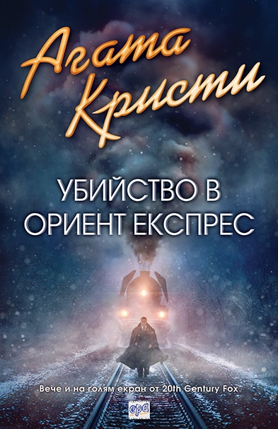
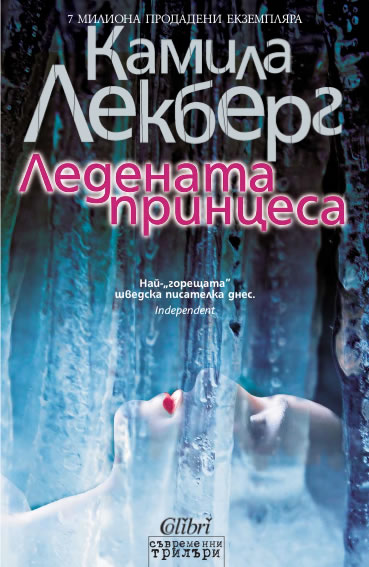
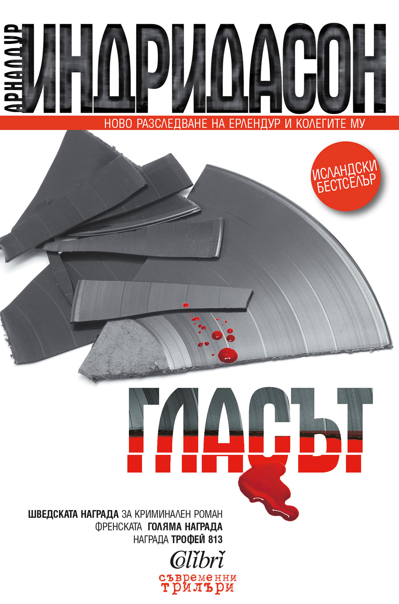

ЗИМНО ПРИКЛЮЧЕНИЕ: УБИЙСТВЕНО СТУДЕНО
Зимата е в разгара си. Снежните пипала се простират навред и обгръщат всичко в своята убийствено студена прегръдка. Зимно приключение? Убийствено студено? Досетихте ли се вече? През месец ноември в Библиотеката ни автор на месеца бе Луиз Пени, а книгите ѝ винаги предизвикват интерес. Луиз Пени стои зад поредицата от разследвания на инпектор Гамаш и бива класирана като авторка от ранга на Агата Кристи, печелейки редица престижни награди. Но това са подробности, затова предлагам да минем на същината.
Като казвам същината, всъщност имам предвид Кралицата на криминалния жанр. Най-известният й роман „Убийство в Ориент Експрес“ наскоро бе прероден в нов книжен облик от издателство Ера, по случай екранизацията. Както може би предполагате, тук няма да ви прилошее от кървища и екшън. Но авторката умело ще оплете вниманието ви с мистериозни детайли и ще ви заклещи като в пряспа (а може би дори буквално, ако пътувате с влак съвсем безгрижно или поне за сега), докато педантично разплита сюжета пред очите ви.


Неизменно следващата книга в списъка ми е този път от „Снежната кралица на криминалния роман“ или още – шведската Агата Кристи. Няма място за съмнение – това е Камила Лекберг. Заслужила напълно прозвището си, авторката ще ви представи историята на едно (само)убийство, а един невидим и безкрайно самотен глас призрачно ще ви напомня, че ледената принцеса е “толкова красива така полегнала под ледената повърхност”, докато студът наднича от всеки ъгъл.
Ако все пак в един криминален роман задължително си искате забързаното действие и кървавите сцени, подобно вампир, копнеещ за свежа плът, не търсете повече. Защото "Снежния човек" се завръща в нова корица, следвана от филмова адаптация. Пригответе се за екстремна доза адреналин, преследвайки брутален сериен убиец, избиращ тъкмо зимата, за да създаде своята злокобна игра.
